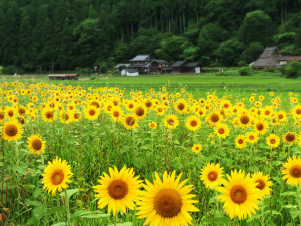
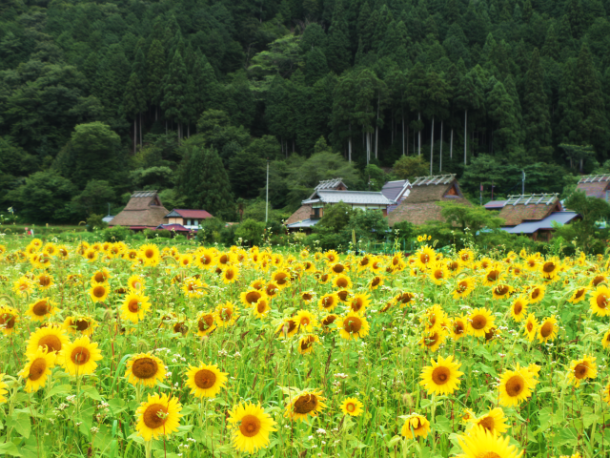
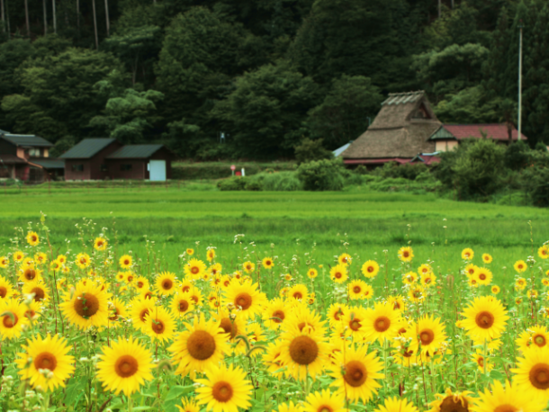

最新の情報は 公式サイトのツアーページ をご覧ください。
【中止】夏色に染まる美山へ～ひまわり咲くかやぶきの里散策～
※大人・子ども同額
本ツアーの募集は終了いたしました
貸切で再現できる場合もございますのでご相談ください。お問合せフォームはこちら
＜MKトラベルTOPはこちら▶＞
＜おすすめツアーはこちら▶＞
夏の美山に、期間限定の特別な景色を探しに出かけませんか？
茅葺屋根の家々が立ち並ぶ「美山かやぶきの里」に、夏を彩るひまわりが咲き誇ります。
昔ながらの里山風景と、青空に映える黄色いひまわり。
どこか懐かしく、心がほっとする美山ならではの夏の風景をゆっくりお楽しみください。
昼食は、美山の自然に囲まれた「美山自然文化村 河鹿荘」にて、季節の味覚を味わう里山ランチをご用意。
さらに、話題の「ぬいぐるみ神社」へ立ち寄り、旅の思い出づくりを。
最後は道の駅 美山ふれあい広場で、美山ならではのお土産や特産品のお買物もお楽しみいただけます。
夏だけ出会える、美山の特別な一日をお過ごしください。
| ここがおススメ！ |
| ・夏限定！ひまわり咲く美山かやぶきの里へ 茅葺屋根の里山風景と、一面に広がるひまわりの絶景を。 ・道の駅 美山ふれあい広場で、地元の特産品のお買物もお楽しみいただけます。 ・新しい美山の立寄りスポット「ぬいぐるみ神社」へも |
行程
| 9:00 | 京都駅八条口MKタクシーのりば （集合・出発） |
| 10:00 | ウッディ京北 ＜休憩／約20分滞在＞ |
| 10:50 | 美山かやぶきの里 ＜散策・ひまわり鑑賞／約60分＞ |
| 12:00 | 美山自然文化村 河鹿荘 ＜昼食／約60分＞ |
| 13:20 | ぬいぐるみ神社 ＜自由参拝／約40分＞ |
| 14:20 | 道の駅 美山ふれあい広場 ＜お買物／約20分＞ |
| 16:10頃 | 京都駅（解散） |
※渋滞等で、行程の入替や、予定通りの滞在時間をお取りすることができない場合がございます。予めご了承ください。
※気象状況により花の見ごろが前後する場合があります。見ごろをお約束した日程ではありませんので予めご了承くださいませ。



写真提供：美山自然文化村 河鹿荘
【MKトラベルLINE公式アカウント】
MKトラベルの新規ツアー情報をLINEでお届けいたします

【各SNSでも京都の情報やツアー情報をお届けしています】


旅行条件
| ツアー番号 | T602MK |
| 出発地 | 京都市 |
| 添乗員／ガイド | なし（乗務員がその業務を代行いたします）／なし |
| 食事 | 昼食1回 |
| 最少催行人数 | 6名様 |
お申込みについてのご注意
※最少催行人数は6名様です。最少催行人員に満たない場合は、旅行の実施を取りやめることがあります。出発の5日前にその旨をご連絡し、お客様から当社がお預かりしている旅行費用の全額をお返しいたします。
※旅行条件・旅行代金は、2026年7月1日現在を基準としています。
※行程および帰着時間は交通事情などにより変更になる場合があります。
※お申込みの前に弊社の募集型企画旅行規約をご確認ください。
よくある質問
Q.1名ですが、申し込みできますか？
A.はい。MKトラベルのツアーにはお一人参加の方もよく来られますので、お気軽にお申し込みください。
Q.美山かやぶきの里はどんな場所ですか
美山かやぶきの里は現在も39棟ものかやぶき屋根の民家が残っており、国の重要伝統的建造物群保存地区かつネスコ無形文化遺産にも登録されています。
地元の人々により守られたのどかな田舎の田園風景はもちろん、グルメや季節ごとのイベントなども魅力です。
Q.美山かやぶきの里のひまわりの見ごろはいつですか
美山かやぶきの里のひまわりの見ごろは7月中旬～8月上旬ごろといわれております。
本ツアーは地元の方による見ごろの予想をふまえて出発日を設定しております。
（気象状況により花の見ごろが前後する場合があります。見ごろをお約束した日程ではありませんので予めご了承くださいませ。）
Q. 京都駅から美山かやぶきの里まで何時間かかりますか
タクシーで片道約1時間半です。本ツアーは京都駅から乗り換えなしで美山かやぶきの里まで快適に移動できます。
※公共交通機関（電車→バス乗換）の場合、約2時間
Q. 美山かやぶきの里到着後、60分間の散策時間がありますが、ひまわり鑑賞以外に何ができますか
かやぶき屋根の民家の鑑賞や写真撮影、地元の食材を使ったグルメの食べ歩きなど、思い思いにお過ごしいただけます。
（散策後は地元食材を利用したランチをお楽しみいただけます）
Q. 季節の味覚を味わう里山ランチとは？
「美山自然文化村 河鹿荘」で1番人気の松花堂弁当をご用意しております。
美山の豊かな自然の中で育った、地元食材を使用したお弁当です。
お問合せフォームはこちら
本ツアーの募集は終了いたしました
貸切で再現できる場合もございますのでご相談ください。お問合せフォームはこちら
＜MKトラベルTOPはこちら▶＞
＜おすすめツアーはこちら▶＞
・TACPOカード
・クレジットカード決済
・コンビニ決済
お支払方法詳細はこちら
お客様のご都合でご予約をキャンセルされる場合は、すみやかに下記お問合せ先までご連絡ください。
キャンセル料
11日目に当たる日以前
無料
10日目に当たる日以前
20%
7日目に当たる日以前
30%
旅行開始日の前日
40%
旅行開始日の当日
50%
旅行開始後又は無連絡
100%